空の ASP.NET Core プロジェクトからとりあえず Web サイトのトップページを書いて Azure にデプロイするまで
公開日：
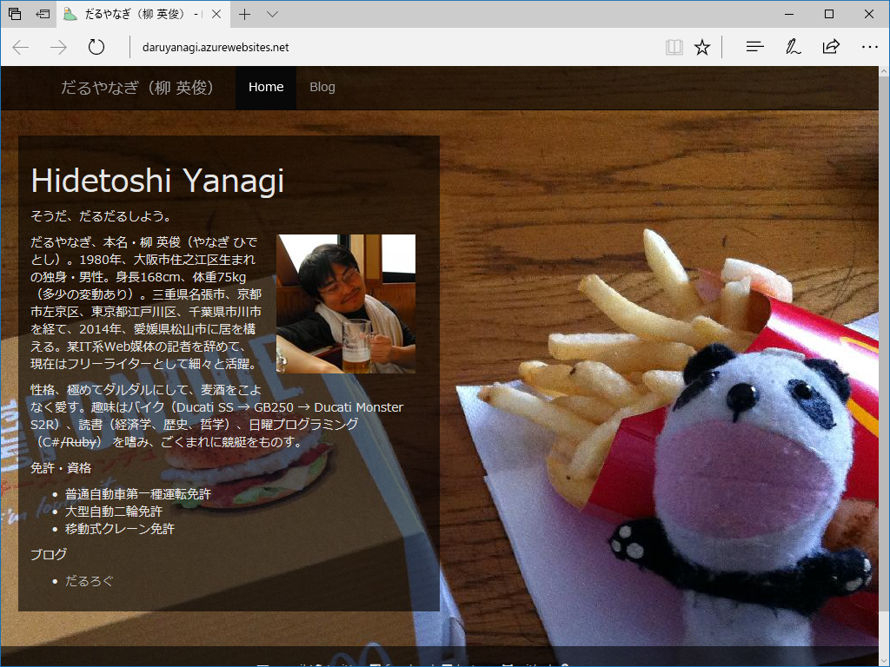
ウチの Web サイトは Microsoft Azure の Bizspark を使わせてもらっていたのですが、いつのまにかサブスクリプションが切れていて（そういえばいろいろメールがきてた気がしないでもない）、アクセスできなくなってしまいました。あれ、データもサルベージできないのかな……。
というわけで、一からサイトを作り直すことにしました。
とりあえず、今回の目標は web.archive.org からサルベージしたトップページの復旧です。もう一度 ASP.NET で組みなおしてもいいのですが、いい機会なので、ずっと挑戦してみたかった ASN.NET Core を利用してみることにしましょう（よく知らんけど、今後はこっちが主流になりそうな匂いがするので）。右も左も分からんけど、大丈夫やろうか。
前提条件と大まかな流れ
まず Visual Studio 2017 Community の「ASP.NET と Web 開発」というワークロードがインストールされている環境を用意（これだけで足りんかったらごめんな、正直よくわかってないんや）。空のテンプレートを作成し、トップページの Index.cshtml を表示するところまで頑張ります。
実装
空のテンプレートを作成
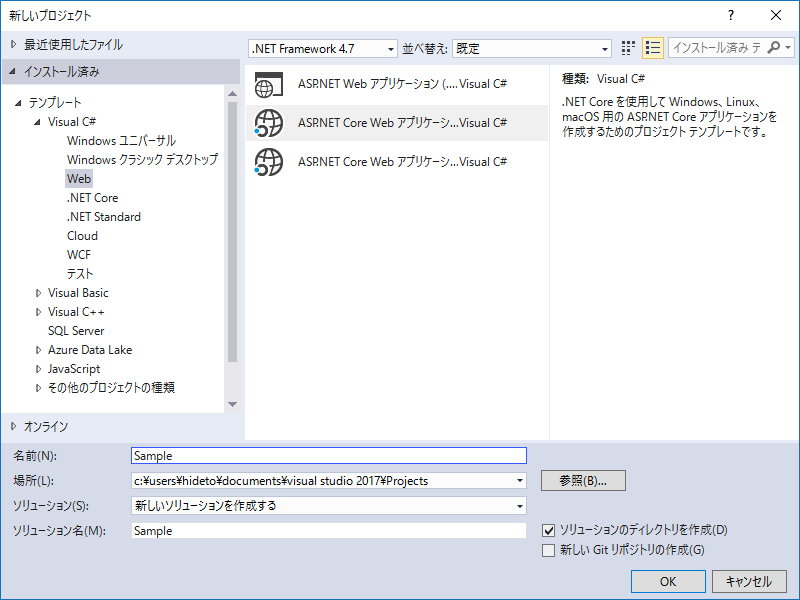
まず、「ASP.NET Core Web アプリケーション」のプロジェクトを新規に作成します（名前は Sample にしました）。
- .NET Core
- .NET Framework
の 2 つのバージョンがありますが、今回は前者（.NET Core）を選択。
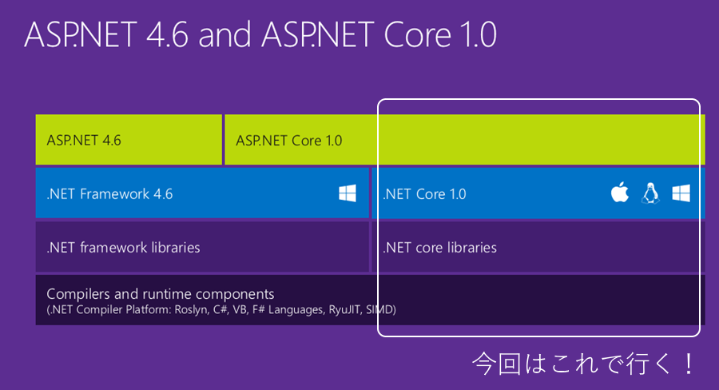
.NET Core はクロスプラットフォームなので、Linux サーバーでも運用できるはず。いずれは Docker なんかも試してみたいなー。
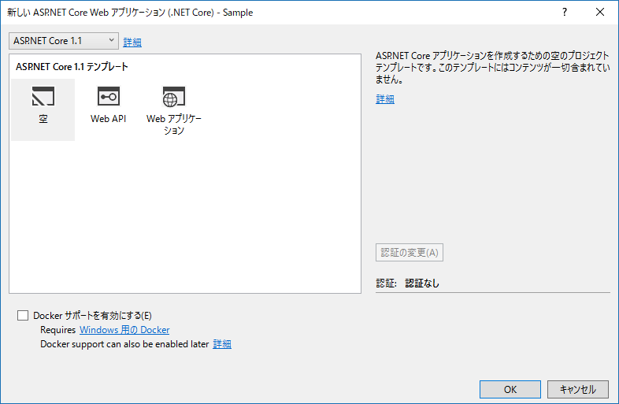
プロジェクトを作成するとテンプレート画面が現れるので、「空」を選択。いきなり訳の分からんファイルをブリブリ生成されても泣いてしまうからね、仕方ないね。
ちなみに ASP.NET Core のバージョンは 1.1 でした。そろそろ 2.0 なんじゃなかったっけ？ また変わったら嫌だなー。
空のテンプレートを概観
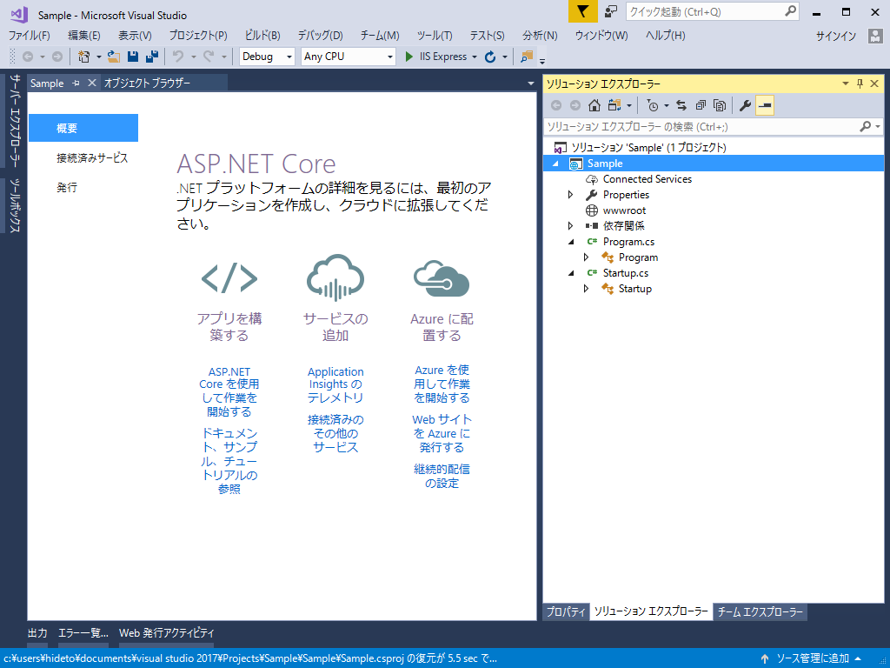
プロジェクトが作成されたら、さらっと中身を見てみましょう。ファイル構造はこんな感じです
- wwwroot フォルダー
- Program.cs
- Startup.cs
シンプルでいい感じ。最初に実行される main() 関数は Program.cs に記述されています。
using System; using System.Collections.Generic; using System.IO; using System.Linq; using System.Threading.Tasks; using Microsoft.AspNetCore.Hosting;namespace Sample { public class Program { public static void Main(string[] args) { var host = new WebHostBuilder() .UseKestrel() .UseContentRoot(Directory.GetCurrentDirectory()) .UseIISIntegration() .UseStartup<Startup>() .UseApplicationInsights() .Build();
host.Run(); } } }
よくわからんけど、いろんな設定をしてホストを作成し、実行しているみたいですね。素人は触らん方がよさそう。
一方の Startup.cs はこんな感じ。
using System; using System.Collections.Generic; using System.Linq; using System.Threading.Tasks; using Microsoft.AspNetCore.Builder; using Microsoft.AspNetCore.Hosting; using Microsoft.AspNetCore.Http; using Microsoft.Extensions.DependencyInjection; using Microsoft.Extensions.Logging; namespace Sample { public class Startup { // This method gets called by the runtime. Use this method to add services to the container. // For more information on how to configure your application, visit https://go.microsoft.com/fwlink/?LinkID=398940 public void ConfigureServices(IServiceCollection services) { } // This method gets called by the runtime. Use this method to configure the HTTP request pipeline. public void Configure(IApplicationBuilder app, IHostingEnvironment env, ILoggerFactory loggerFactory) { loggerFactory.AddConsole(); if (env.IsDevelopment()) { app.UseDeveloperExceptionPage(); } app.Run(async (context) => { await context.Response.WriteAsync("Hello World!"); }); } } }
ConfigureServices と Configure という二つのメソッドがあり、Configure で Hello World! を出力する（context.Response.WriteAsync）ようになっているみたい。
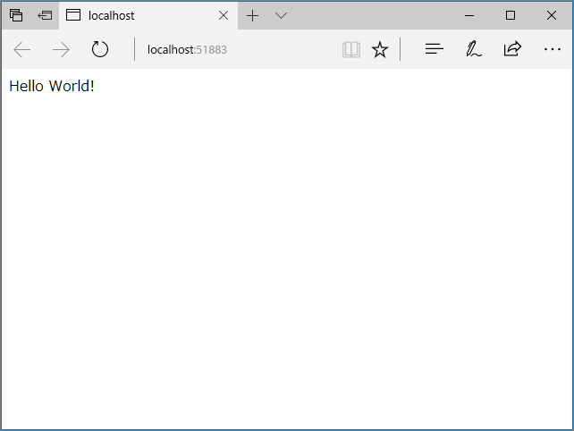
実際に［F5］キーで実行してみると、Hello World! が出力されました。つまり、どっかにファイルを置いて読み込み、context.Response.WriteAsync() すれば、とりあえずトップページは出力されそう……だけど、後々のことを考えると流石にそれはめんどくさそうなので、フレームワークの力を借りておこうかな。
ASP.NET Core MVC の導入
できれば使い慣れた ASP.NET Web Pages の ASN.NET Core 版のようなのがあればよかったのだけど、今のところ無いのかな？ よくわかんないので、比較的情報の多かった ASN.NET Core MVC を導入してみます。NuGet パッケージで簡単にインストールできるみたいなので、今回はそれを利用してみましょう。
アプリを終了して、ソリューションのコンテキストメニューから［ソリューションの NuGet パッケージを管理］コマンドを選択。
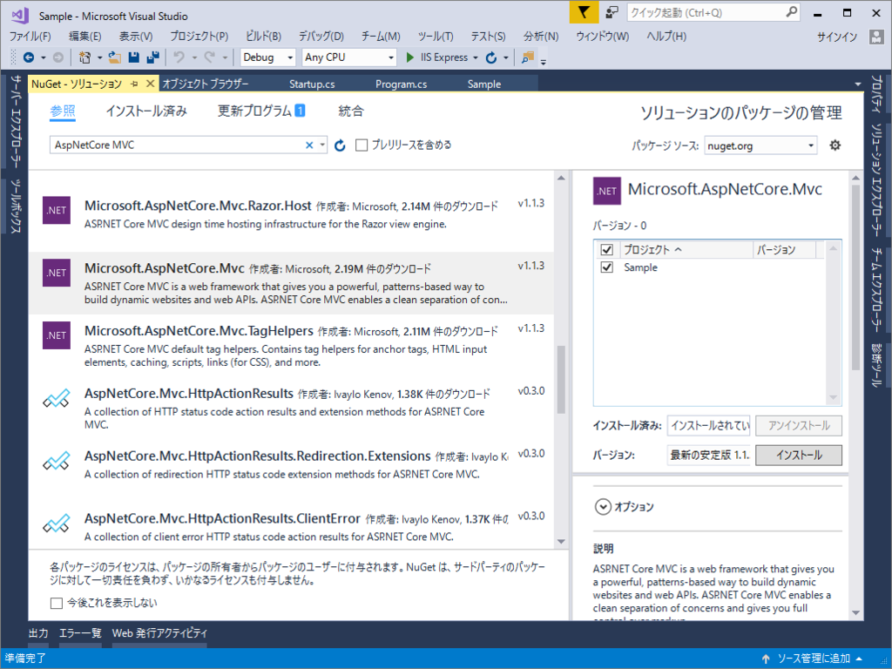
「Microsoft.AspNetCore.MVC」を探してインストールします。
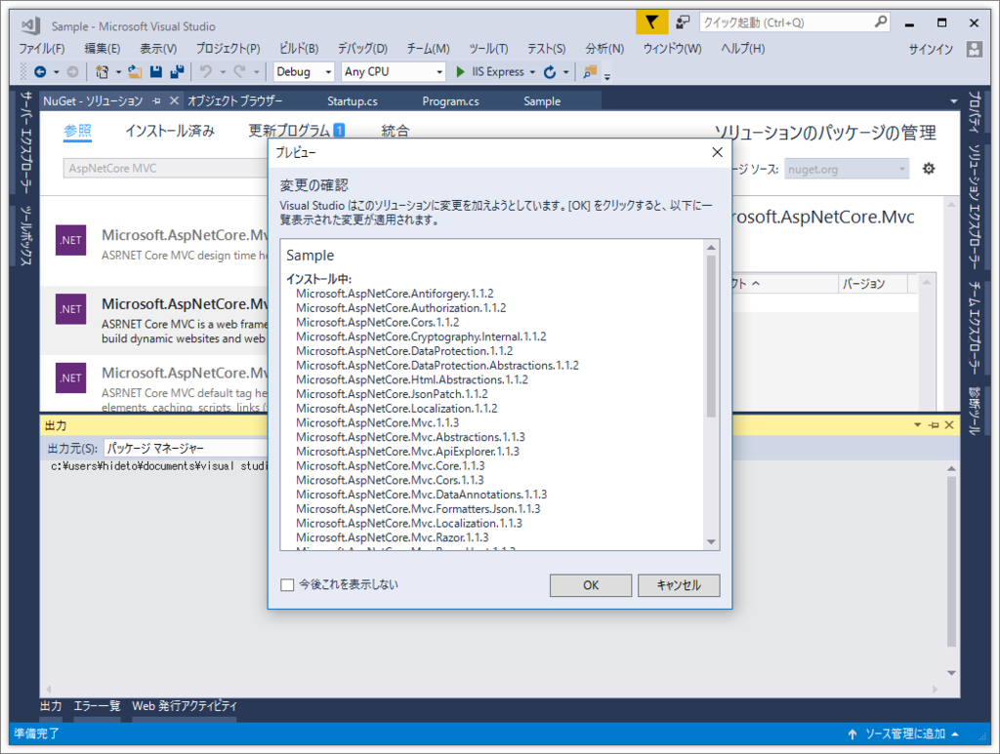
パッケージがクソほどあってビビるけど、インストールは一瞬で終わりました。
： ： 'Microsoft.Extensions.WebEncoders 1.1.2' が Sample に正常にインストールされました NuGet の操作の実行に 2.22 sec かかりました 経過した時間: 00:00:04.0184836 ========== 終了 ==========NuGet パッケージを復元しています… 経過した時間: 00:00:01.3445620 ========== 終了 ==========
最近の NuGet は速いなー……なんかもっと遅いイメージあったんだけど。あとは、Startup.cs で MVC を利用するよう書き換えます。
using System; using System.Collections.Generic; using System.Linq; using System.Threading.Tasks; using Microsoft.AspNetCore.Builder; using Microsoft.AspNetCore.Hosting; using Microsoft.AspNetCore.Http; using Microsoft.Extensions.DependencyInjection; using Microsoft.Extensions.Logging; namespace Sample { public class Startup { // This method gets called by the runtime. Use this method to add services to the container. // For more information on how to configure your application, visit https://go.microsoft.com/fwlink/?LinkID=398940 public void ConfigureServices(IServiceCollection services) { // MVC を追加 services.AddMvc(); } // This method gets called by the runtime. Use this method to configure the HTTP request pipeline. public void Configure(IApplicationBuilder app, IHostingEnvironment env, ILoggerFactory loggerFactory) { loggerFactory.AddConsole(); if (env.IsDevelopment()) { app.UseDeveloperExceptionPage(); } // 使わないのでコメントアウト // app.Run(async (context) => // { // await context.Response.WriteAsync("Hello World!"); // }); // ルーティング を追加 app.UseMvc(routes => { routes.MapRoute( name: "default", template: "{controller=Home}/{action=Index}/{id?}"); }); } } }
ビルドしてエラーがなければ次に進みます。ルーティングのマップは、
- /Hoge/Fuga/Piyo
にアクセスしたら、
- HogeController の Fuga() メソッドを叩け（引数は Piyo）
って感じの意味だと思います。デフォルト引数（？）が設定されているので、ルートへのアクセスで
- HomeController の Index() メソッドを叩け
になります。Index() メソッドでビューを表示できれば今回の目標は完了やね。――というわけで、次はコントローラーと、それを表示するビューの実装です。
コントローラーとビューを作成
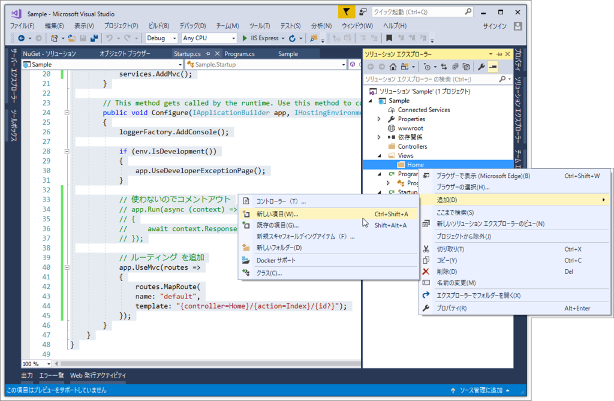
以下のような構造でコントローラーとビューを作成します。この辺りは MVC の“お約束”なので覚えるしかない。
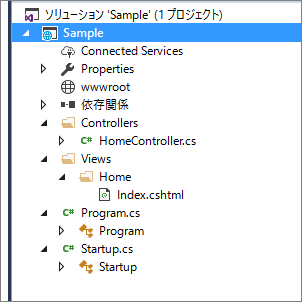
- Controllers フォルダー
- HomeController.cs
- Views フォルダー
- Home フォルダー
- Index.cshtml
- Home フォルダー
- wwwroot フォルダー
- Program.cs
- Startup.cs
ソリューションエクスプローラーのコンテキストメニューには［追加］－［コントローラー］というコマンドがあるのですが、これを使うとなんかエラーが出たので、［新しい項目］コマンドからコントローラーを追加しました。
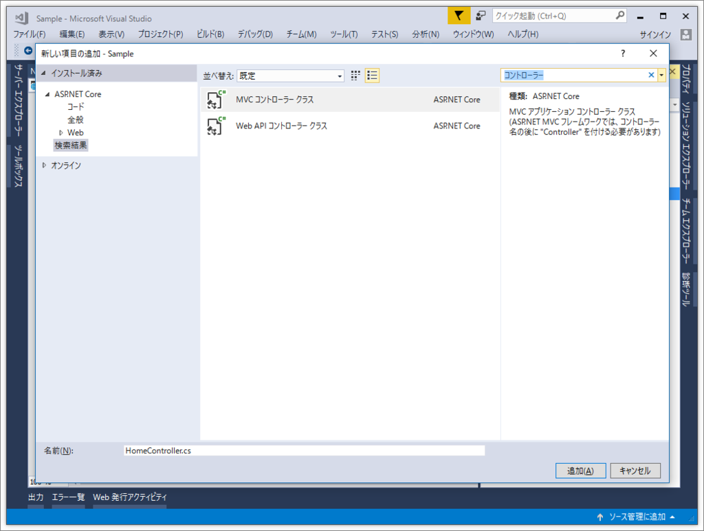
先程、ルーティングでデフォルトコントローラーの名前を“Home”にしておいたのにはとくに意味はなく、単にこのときの既定の名前が“HomeController.cs”だったからデス。名前はお好みで。
using System; using System.Collections.Generic; using System.Linq; using System.Threading.Tasks; using Microsoft.AspNetCore.Mvc;// For more information on enabling MVC for empty projects, visit https://go.microsoft.com/fwlink/?LinkID=397860
namespace Sample.Controllers { public class HomeController : Controller { // GET: /<controller>/ public IActionResult Index() { return View(); } } }
Index() も用意されているので、ここで追加のコーディングは不要。なんでも既定（“お約束”）に合わせておくと色々楽ちん。
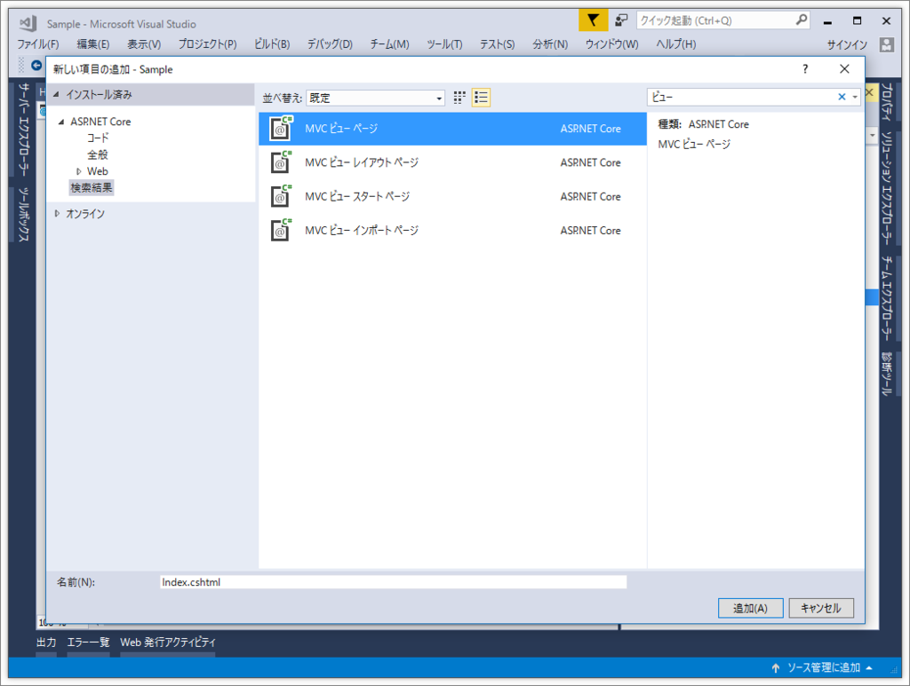
ビューもおんなじ感じで。作成するやで。ビューは殺風景なので、適当にサンプルを書いてみました。
@{
var message = "Hello! World";
}
<html>
<head>
<title>@message</title>
</head>
<body>
<p>@message</p>
<p>@DateTime.Now</p>
</body>
</html>
［F5］で実行します。
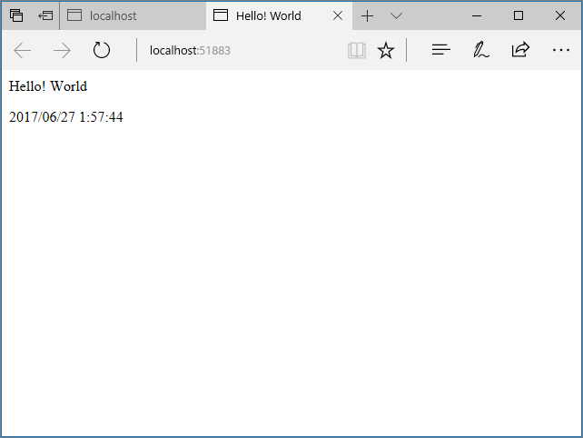
フーーーッ！ これでだいたい完了！ あとはビューをしこしこ書いていくだけです。
性的静的ファイルを利用
けれど、これだけだと CSS や JavaScript を置いて読み込んだりできなくて不便でした。というわけで、以下の設定を Startup.cs の Configure() メソッドに追加しておきました（もうネームスペースやクラスの部分は省いて大丈夫ですよね！）。
public void Configure(IApplicationBuilder app, IHostingEnvironment env, ILoggerFactory loggerFactory) { loggerFactory.AddConsole();if (env.IsDevelopment()) { app.UseDeveloperExceptionPage(); }
// 以下の2行を追加 app.UseDefaultFiles(); app.UseStaticFiles();
app.UseMvc(routes => { routes.MapRoute( name: "default", template: "{controller=Home}/{action=Index}/{id?}"); }); }
これで wwwroot に静的ファイルがあるかどうかをチェックし、あればそっちを先に読み込んでくれます。ビューを cshtml にする必要がなければ、html にして wwwroot に置いておき、この二行を追加するだけでもよかったね。……まぁ、今後のことも考えると無駄ではないけど。
デプロイ
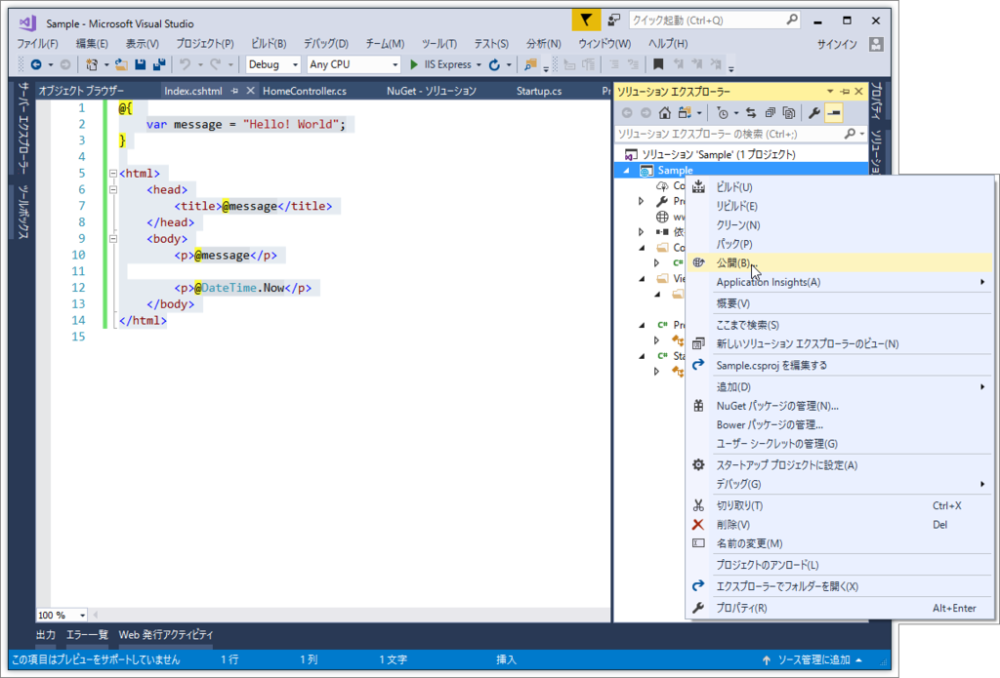
プロジェクトのコンテキストメニューから［公開］コマンドを選択。あとはそんなに難しくないと思うで、以下省略。ウチの場合はトラブルなく、デプロイまで完了しました。いずれは GitHub 連携でデプロイ……みたいな感じにしたいですね。
終わり！